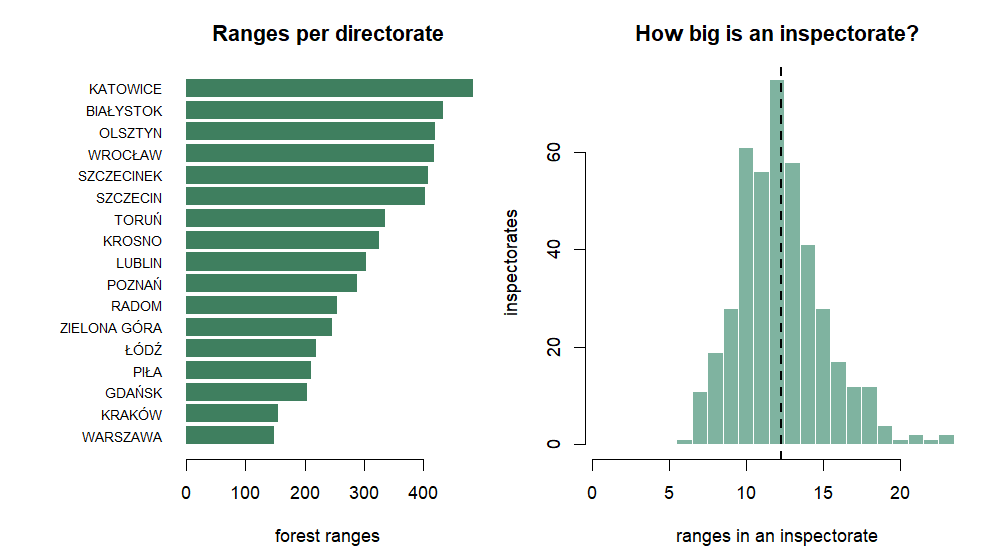
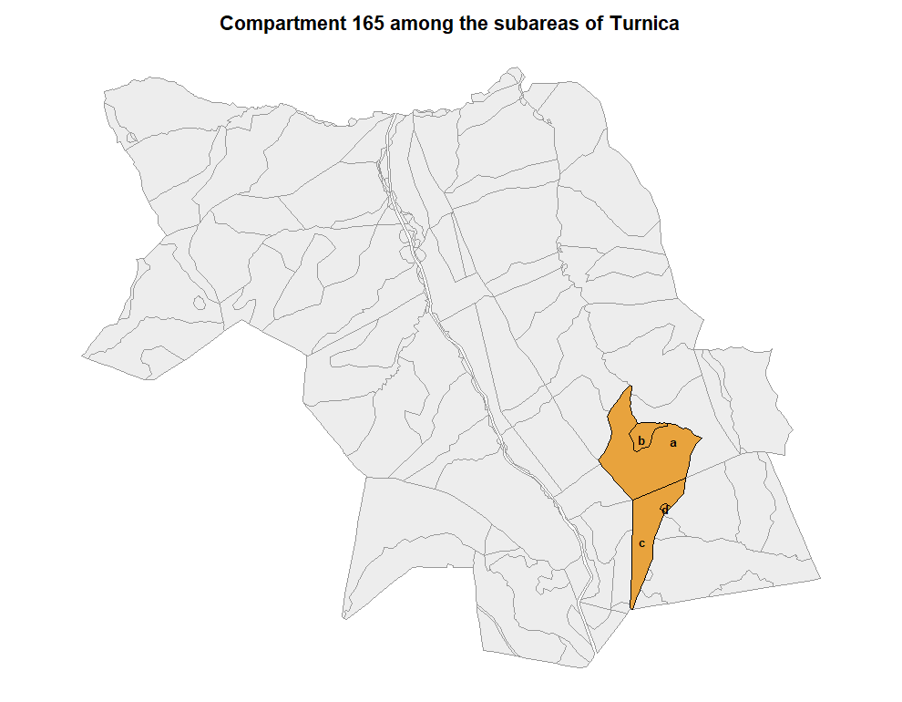

The Forest Data Bank publishes the State Forests’ administrative hierarchy and its subareas. None of it needs a VPN.
The hierarchy, and the key that runs through it
Four levels, and every object at every level carries the same key: the forest address.
parse_forest_address(c("04",
"04-02",
"04-02-2-11",
"04-02-2-11-165 -a -00"))
#> directorate_cd inspectorate_cd obreb_cd range_cd compartment subarea part
#> 1 04 <NA> <NA> <NA> <NA> <NA> <NA>
#> 2 04 02 <NA> <NA> <NA> <NA> <NA>
#> 3 04 02 2 11 <NA> <NA> <NA>
#> 4 04 02 2 11 165 a 00Twenty-five characters, seven fixed-width fields, and the higher levels leave the lower ones blank rather than omitting them – so the positions never move and a truncated address is still a valid one. That is what makes the address usable as a search term.
Listing the country
The name tables are small and are fetched without geometry, which keeps them quick enough to work with interactively.
bdl_overview()
#> directorate_cd directorate_name inspectorates ranges edition_min edition_max
#> 01 01 BIAŁYSTOK 31 433 2026 2026
#> 02 02 KATOWICE 38 484 2026 2026
#> 03 03 KRAKÓW 16 155 2026 2026
#> 04 04 KROSNO 26 326 2026 2026
#> 05 05 LUBLIN 25 304 2026 2026
#> 06 06 ŁÓDŹ 19 220 2026 2026
#> 07 07 OLSZTYN 32 420 2026 2026
#> 08 08 PIŁA 20 211 2026 2026
#> 09 09 POZNAŃ 25 289 2026 2026
#> 10 10 SZCZECIN 35 403 2026 2026
#> 11 11 SZCZECINEK 30 408 2026 2026
#> 12 12 TORUŃ 27 335 2026 2026
#> 13 13 WROCŁAW 33 418 2026 2026
#> 14 14 ZIELONA GÓRA 20 246 2026 2026
#> 15 15 GDAŃSK 15 205 2026 2026
#> 16 16 RADOM 23 254 2026 2026
#> 17 17 WARSZAWA 14 148 2026 2026
#> 1 -- POLAND 429 5259 2026 2026
inspectorates <- bdl_catalogue("inspectorate")
ranges <- bdl_catalogue("range")
head(ranges, 4)
#> directorate_cd directorate_name inspectorate_cd inspectorate_name obreb_cd
#> 18 01 BIAŁYSTOK 01 Augustów 1
#> 1 01 BIAŁYSTOK 01 Augustów 1
#> 20 01 BIAŁYSTOK 01 Augustów 1
#> 5 01 BIAŁYSTOK 01 Augustów 1
#> range_cd range_name adr_for year
#> 18 01 Lipowiec 01-01-1-01 2026
#> 1 02 Studzieniczna 01-01-1-02 2026
#> 20 03 Czarny Bród 01-01-1-03 2026
#> 5 04 Sajenek 01-01-1-04 2026Structure falls out of that directly:
per_inspectorate <- as.integer(table(paste(ranges$directorate_cd, ranges$inspectorate_cd)))
summary(per_inspectorate)
#> Min. 1st Qu. Median Mean 3rd Qu. Max.
#> 6.00 10.00 12.00 12.26 14.00 23.00
sort(table(ranges$inspectorate_name), decreasing = TRUE)[1:6]
#>
#> Pisz Żednia Oleśnica Śląska Bircza Janów Lubelski
#> 23 23 22 21 21
#> Głogów
#> 20
op <- par(mfrow = c(1, 2), mar = c(4.2, 8.5, 3, 1))
ov <- bdl_overview(); ov <- ov[ov$directorate_cd != "--", ]
o <- ov[order(ov$ranges), ]
barplot(o$ranges, names.arg = o$directorate_name, horiz = TRUE, las = 1,
cex.names = 0.75, col = "#3f7f5f", border = NA,
xlab = "forest ranges", main = "Ranges per directorate")
par(mar = c(4.2, 4.2, 3, 1))
hist(per_inspectorate, breaks = seq(0.5, max(per_inspectorate) + 0.5, 1),
col = "#7fb3a0", border = "white", xlab = "ranges in an inspectorate",
ylab = "inspectorates", main = "How big is an inspectorate?")
abline(v = mean(per_inspectorate), lty = 2, lwd = 2)
plot of chunk national-structure
par(op)A warning about the year column while it is in view: it
is the edition stamp of the BDL release, identical
across the whole country, not the year a unit’s management plan was
revised. It reads 2026 for all 429 inspectorates. BDL publishes the
current state and nothing else – there is no archive here, and no field
to tell old data from new. That is the one respect in which it is poorer
than the GUGiK indexes, where every vintage stays available and
queryable.
Finding a unit
By name, ignoring case and Polish diacritics:
metkow <- bdl_unit(inspectorate = "Chrzanow", range = "Metkow")
#> Looking up the range name table...
#> fetching 1 geometry
sf::st_drop_geometry(metkow)
#> <rgeopl BDL range lookup: 1 features>
#> inspectorates: Chrzanów
#> plan vintages: 2026 (current state only, not an archive)
#> directorate_cd directorate_name inspectorate_cd inspectorate_name obreb_cd
#> 1 02 KATOWICE 07 Chrzanów 1
#> range_cd range_name compartment subarea part adr_for year
#> 1 03 Mętków <NA> <NA> <NA> 02-07-1-03- - - 2026Or by address, at whatever depth you have. The most specific level you give is the one you get back:
bdl_by_address("04-02-2")$range_name
#> Looking up lesnictwa by address...
#> 6 unit(s) match; fetching geometry
#> [1] "Sierakośce" "Pechnów" "Turnica" "Posada Rybotycka"
#> [5] "Borysławka" "Leszczyny"Below the forest range there is no index to query directly, so the range is resolved first and its subareas filtered locally – which keeps the request bounded at hundreds of features rather than hundreds of thousands.
compartment <- bdl_by_address("04-02-2-11-165")
#> Resolving the forest range 04-02-2-11 first...
#> RDLP_Krosno_wydzielenia: 381 features
#> 381 subareas, plan vintages 2026-2026
#> 4 subarea(s) match
sf::st_drop_geometry(compartment)[, c("adr_for", "area_ha", "species",
"species_age", "site_type")]
#> <rgeopl BDL layer: 4 features>
#> adr_for area_ha species species_age site_type
#> 77 04-02-2-11-165 -a -00 25.87 BK 104 LGŚW
#> 277 04-02-2-11-165 -d -00 0.26 <NA> 0 <NA>
#> 336 04-02-2-11-165 -c -00 12.53 BK 149 LGŚW
#> 340 04-02-2-11-165 -b -00 2.75 BK 99 LGŚWWrong names and wrong compartments are answered with what does exist:
bdl_unit(inspectorate = "Bircza", range = "Kopysno")
#> Looking up the range name table...
#> Error:
#> ! No range called `Kopysno`. Did you mean: Kopalina, Kopalino, Kopaliny, Kopaniec, Kopaniewo, Kopanina?Subareas over an area
aoi <- as_aoi(sf::st_read(rgeopl_example("gleboczek_aoi.shp"), quiet = TRUE))
subareas <- bdl_subareas(aoi)
#> area spans 2 regional directorates
#> RDLP_Torun_wydzielenia: 267 features
#> dropped 57 subareas that met the bounding box but not the area
#> 210 subareas, plan vintages 2026-2026
d <- sf::st_drop_geometry(subareas)
sp <- aggregate(area_ha ~ species, data = d[!is.na(d$species), ], FUN = sum)
head(sp[order(-sp$area_ha), ], 6)
#> species area_ha
#> 8 SO 763.05
#> 3 DB 131.05
#> 7 MD 28.76
#> 5 DG 6.07
#> 6 JW 4.30
#> 9 ŚW 1.82Compartments are not published as vectors at all – they exist only as
a WMS picture. bdl_compartments() derives them by
dissolving subareas on the compartment field of the address, which is
also self-consistent by construction:
compartments <- bdl_compartments(aoi, quiet = TRUE)
head(sf::st_drop_geometry(compartments)[, c("inspectorate_name", "range_name", "compartment",
"subareas", "area_ha", "area_geom_ha")], 5)
#> <rgeopl BDL layer: 5 features>
#> inspectorates: Gołąbki
#> inspectorate_name range_name compartment subareas area_ha area_geom_ha
#> 4 Gołąbki Oćwieka 52 4 10.28 10.40
#> 57 Gołąbki Oćwieka 53 3 6.56 6.64
#> 261 Gołąbki Oćwieka 54 2 29.11 29.49
#> 252 Gołąbki Oćwieka 55 5 23.80 24.70
#> 251 Gołąbki Oćwieka 56 4 17.48 17.52Two area columns, deliberately apart: area_ha is what
the management plan records, area_geom_ha is what the
polygons enclose. They differ by around a percent, and merging them
would hide that.
The trap: an address is not a polygon
A forest range’s outline and the set of subareas addressed to it are not the same thing.
turnica <- bdl_by_address("04-02-2-11", quiet = TRUE)
by_polygon <- bdl_subareas(turnica, quiet = TRUE)
by_address <- bdl_subareas(turnica, within_aoi = FALSE, quiet = TRUE)
by_address <- subset(by_address, directorate_cd == "04" & inspectorate_cd == "02" &
obreb_cd == "2" & range_cd == "11")
data.frame(
selection = c("addressed to the range", "inside its polygon"),
subareas = c(nrow(by_address), nrow(by_polygon)),
area_ha = round(c(sum(by_address$area_ha, na.rm = TRUE),
sum(by_polygon$area_ha, na.rm = TRUE)), 1)
)
#> selection subareas area_ha
#> 1 addressed to the range 144 1186.6
#> 2 inside its polygon 194 1615.2Fifty subareas lying inside Turnica’s outline belong, by address, to four neighbouring ranges. Taking the outline as the definition of the unit’s contents overstates its area by 36%.
Both readings are available on purpose.
bdl_subareas(aoi) filters by geometry, because “what is on
this ground” is a spatial question. bdl_by_address()
filters by address, because “what belongs to this unit” is an
administrative one. Pick the one that matches the question.
plot_units(compartment, label = "subarea", context = by_address, fill = "#e8a33d",
border = "black", main = "Compartment 165 among the subareas of Turnica")
plot of chunk turnica-compartment
What is not here
- No archive, and no vintage field, as above.
-
No attribute filtering server-side.
forest_range_name=Metkowreturns zero features whatever the spelling, which is why lookups go through a cached name table instead. - No names on the subareas. They carry codes only, so the directorate, inspectorate and range names are joined in from the code tables.